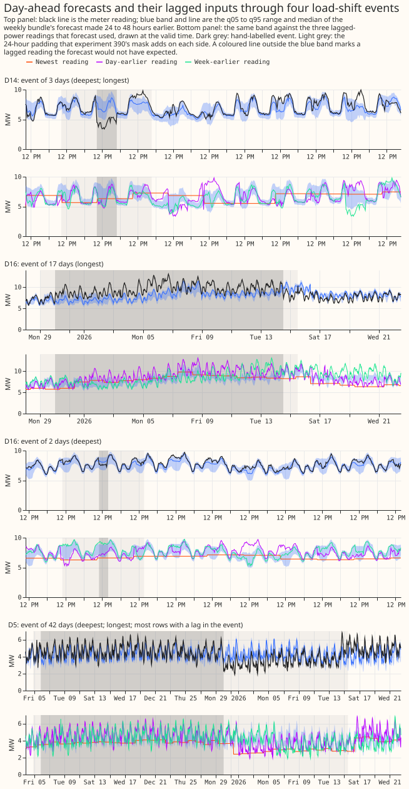
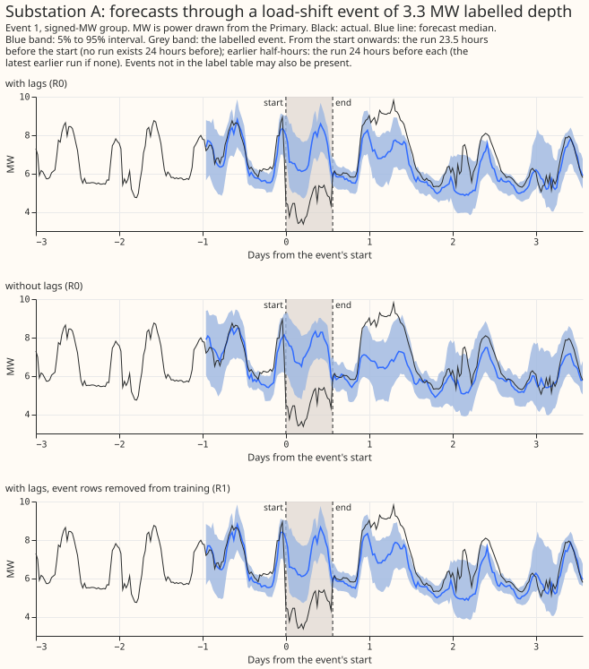
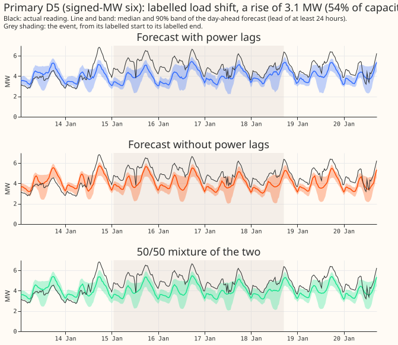
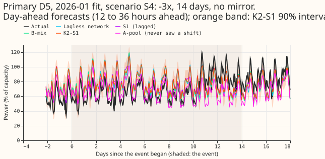
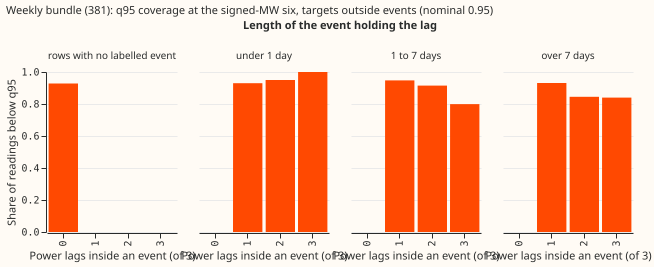
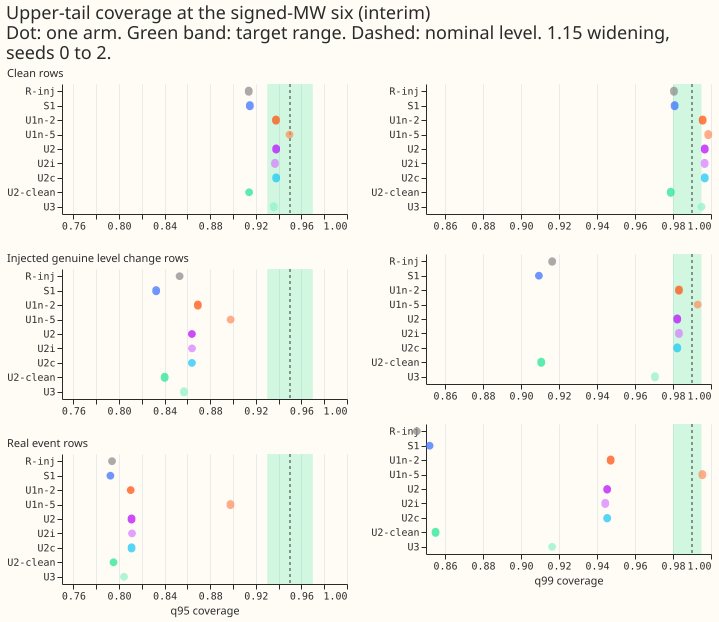
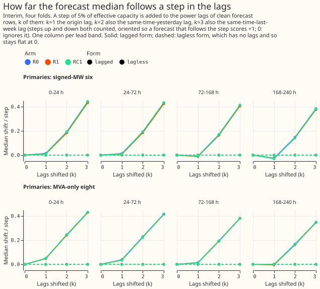
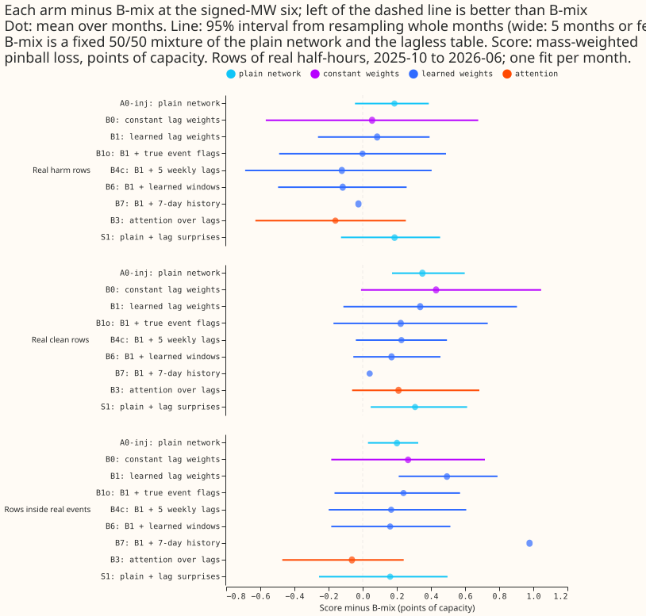
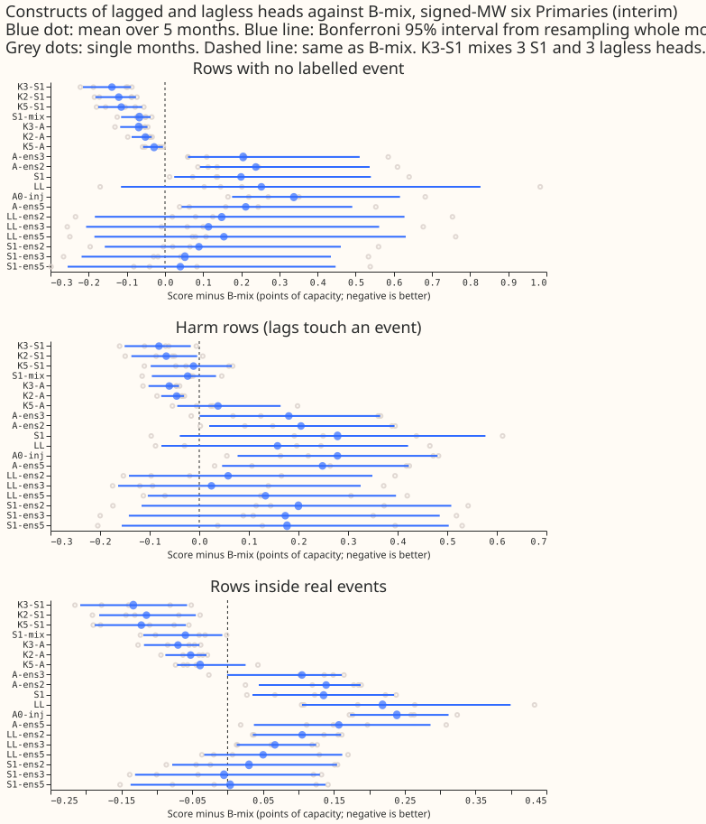

Summary of what the experiments found about load-shift events
For the net demand forecast, the experiments found no design that both ignores a load-shift event in the recent power readings and loses no accuracy on rows with no labelled event. The best robust option tried is a fixed 50/50 mixture of a forecast that reads the recent power readings and a forecast that does not. No learned weight, event detector, or training mask beat that mixture inside real events. Mixing in more neural networks with extra inputs scored better on rows with no labelled event, but only one six-network mixture (K3-A, experiment 454) did so inside real events scored against actuals corrected to the normal running arrangement (NRA). The real events are too few to settle several of the questions. This page collects the answers to the maintainer's ten questions from 38 merged experiments, with the numbers and intervals of the merged pages. The page says "Not measured" where no merged page answers a question. The page is written from the merged result pages only, and no fit, score, or figure on it is new.
The page has four parts. Part 1 shows what the data and the events look like. Part 2 answers the ten questions. Part 3 is a table of every experiment with its verdict and headline number. Part 4 says what the findings mean for the forecast and lists the decisions that remain open.
Part 1: What the data looks like
A load-shift event is a period in which National Grid Electricity Distribution (NGED) moves load from one Primary substation to its neighbours, so the Primary's recent power does not show its normal demand. A Primary is a primary substation. The NRA is the way NGED's electricity network is usually run. An alternative running arrangement (ARA) is any other arrangement, for example a transfer of load between Primaries. A forecast that stays at the NRA level while a transfer is under way is an NRA forecast. The forecasts on this page read three recent power readings of the Primary, called lags: the newest usable reading, the reading at the same time on an earlier day, and the reading at the same time and weekday in an earlier week (the exact days are given on each experiment's page).
NGED's event labels are incomplete, so every count and every score on this page is affected. NGED's table of hand-labelled events, as corrected by the experiments, holds 133 events, of which 112 are usable because they have an end time and a depth (experiment 402, experiment 400). Experiment 392 left 66 hand-labelled events out of its training targets, and experiment 395 scored 184 merged hand-labelled intervals from an earlier version of the table. NGED's logs miss some events, so a row with no labelled event may hold an event nobody logged, and each count of events is a lower bound. Beside every score on such rows this page writes "rows with no labelled event".
The experiments score 16 Primaries in three groups. The signed-MW six (D5, D9, D10, D11, D14, and D16) are metered in signed megawatts. The MVA-only eight (D2, D3, D4, D8, D12, D19, D21, and D22) are metered in unsigned megavolt-amperes. D15 and D18 have under a year of history and are not scored on this page. The two metering groups are never pooled.
The first figure shows day-ahead forecasts through four real events. The event masks are shaded.

Figure 1. Day-ahead XGBoost forecasts through four labelled events, with the labelled event shaded. Source: experiment 395, Part G, which redraws the event fans of experiment 390 with the event masks shaded.
The second figure shows one real event with the forecasts that experiment 392 compared. Experiment 392's page draws six real events, three at each metering group, chosen by a rule fixed before the scores were read.

Figure 2. One real labelled event: the actuals, the median, and the 5% to 95% band of the unmasked lagged, unmasked lagless, and masked lagged XGBoost forecasts, from the forecast origin one day before the onset. Source: experiment 392.
The third figure shows a real event at Primary D5 with the forecast that reads the power lags and the forecast that does not.

Figure 3. A real event at Primary D5, one of the signed-MW six, with the forecast that reads the power lags and the forecast that does not. Source: experiment 401, which draws six real events at both metering groups.
The fourth figure shows an injected event. An injected event is a synthetic load shift added to the recent power readings of a series, so that the truth is known.

Figure 4. Primary D5 in scenario 4 of experiment 482: a shift of minus 3 lag spreads (a lag spread is the standard deviation of the Primary's 24-hour change in power) lasting 14 days, with no neighbour showing the opposite change, shaded, with the forecasts of five stored demand neural networks. Source: experiment 482.
Part 2: The answers to the ten questions
The maintainer's framing applies to every answer. No forecast can predict a load-shift event. A forecast that stays at the NRA level while an event is under way is therefore the forecast NGED wants. Coverage of the actual reading inside an event is not a test of an NRA forecast, because the actual reading is at the ARA level. The aim is a better, more explainable, or more robust net demand forecast, and not recovery of the hidden event.
Terms used in the answers.
- CRPS is the continuous ranked probability score, in points of effective capacity (percentage points of a Primary's effective capacity). Lower is better.
- Lagless forecast is a forecast that reads none of the recent power readings.
- Harm row is a row whose target lies outside every event but whose lags lie inside one.
- q95 coverage is the share of readings at or below the forecast's 95% quantile. The calibrated value is 0.95.
- Share of a step followed is the shift of the median forecast divided by the size of a step added to the lags. A step of 5% of capacity is the usual size. Some pages call it the leak: the share of a lag step that reaches the median forecast. k is the number of lags that carry the step.
- Minimum detectable effect is the smallest difference that the design can tell from seed-to-seed noise.
- 99.29% interval is a 95% interval widened for the 7 contrasts that one experiment makes at once (a Bonferroni correction).
- Weekly bundle is the XGBoost model of experiment 381, refitted weekly with a solar summary, a sunny flag, and a 1-year half-life. The plain weekly member is the weekly XGBoost member of experiment 87. The monthly control is experiment 381's monthly-refitted XGBoost model.
- GAM stack is the generalised additive model pipeline with a Kalman filter of experiment 377. BG2 is the best-guess stack of five demand models of experiment 87.
- A0-inj and R-inj are the neural networks that read the three lags and are trained on clean and injected power. A-pool is the pooled neural network that never saw an injected shift.
- B1, B3, and B6 are the learned trust weights of experiment 404: learned lag weights, attention over the lags, and learned windows. R1 is the XGBoost model trained with the labelled events removed from its targets. U1n-2 is S1 trained on worlds in which 2% of training rows hold a lasting level change. S3-amb is a neural network that also reads the surprise at neighbouring Primaries.
- S1 is a neural network that reads the three lags plus the surprise at each lag. The surprise at a lag is the lag minus the median of the lagless forecast, divided by half the width of the lagless forecast's 5% to 95% band.
- B-mix is a fixed 50/50 mixture of the probability distributions of a neural network that reads the lags and the lagless forecast. K2-S1 is an equal-weight mixture of two S1 networks and two lagless forecasts.
- Status says whether a page is interim (few months scored, no 99% claim) or audited (a fresh Claude Sonnet agent re-derived the headline numbers independently). Part 3 gives the status of every page.
Question 1: Does an ARA period in the lagged-power inputs affect the tails of the forecast?
Probably yes for the XGBoost forecasts: with a lag inside an event, q95 coverage falls from about 0.93 to between 0.75 and 0.85 and the band does not widen, but the interval of the matching CRPS harm only just excludes zero. The neural networks trained on injected events keep near-calibrated tails on real harm rows.
- All 16 Primaries, weekly XGBoost bundle. On rows with an event lag, q95 coverage is 0.749 for the bundle, 0.772 for the plain weekly member, and 0.845 for the GAM stack. On rows with no lag in an event it is 0.931, 0.945, and 0.945. The bundle's 90% band is narrower on event-lag rows (22.1 points, against 24.5). Rows whose target also lies inside an event drive the failure: their q95 coverage is 0.566, against 0.855 for harm rows (experiment 390, audited).
- Signed-MW six, harm rows with all three lags inside an event. q95 coverage is 0.831 for the bundle, 0.818 for the monthly control, and 0.840 for the GAM stack, against 0.928 for the bundle with lags outside events. The bundle's CRPS rises by 1.03 points (95% interval +0.05 to +2.32, 34 events). The interval is fragile: matching the baseline on Primary, month, and lead band gives +1.06 (-0.05 to +2.48) (experiment 395, no audit recorded).
- Signed-MW six, share of readings inside the 5% to 95% band. The band should hold 0.90 of the readings. On rows with a contaminated lag it held 0.705 for the plain weekly member. A fixed widening raised that to 0.774, and a widening factor fitted on earlier months raised it to 0.883 but sat at its cap of 2 in most months, which doubles the band (experiment 383, audited).
- Neural networks. On real harm rows S1 has q95 coverage 0.927 and q99 coverage 0.972, and the network without the surprise has 0.927 and 0.975 (experiment 439, interim, signed-MW six). The pooled network that never saw an injected shift (A-pool) covers 72% of actuals with its q95 in the worst of eight injected scenarios (experiment 482, interim and unaudited).
Scope: the XGBoost figures use hand-labelled events (most of the failure in experiment 390 comes from five of the Primaries). The harm interval of experiment 395 is the less certain figure. Part 3 lists the other pages.

Figure 5. q95 coverage of the weekly XGBoost bundle for targets outside events, by the length of the event that holds a lag, at the signed-MW six. Source: experiment 478.
Question 2: With clean lags, do the forecast tails hold both the ARA and the NRA level (if trained on both)?
No: when the lags lie outside an event and the target lies inside one, the XGBoost bands hold the event-level reading about 70% of the time, against the 90% they are meant to hold. Training a neural network on lasting level changes widens the upper tail where a jump is ambiguous, and lowers accuracy on rows with no labelled event.
- Forecasts issued before an event starts. Across 19 events with all three lags outside an event, readings inside the event fall inside the 5% to 95% band 70% of the time for the weekly bundle (interval 59% to 81%) and 73% for the GAM stack. The bundle puts 1.6% of readings below its q01 and 7.3% above its q99, against the calibrated 1% each (experiment 390, audited).
- Synthetic step with all lags unshifted (k = 0). The event-level reading lies inside the 90% band on 0.681 of rows, against 0.875 for the unshifted reading, and the q95 reaches the event level on 0.701 of rows. At k = 3 the figures are 0.784 and 0.812 (experiment 395 Part E, XGBoost boosters of experiment 391, no audit recorded).
- Trained on both levels (neural network). Training the S1 network on worlds in which 2% of training rows hold a lasting level change that does not return (U1n-2) raised q99 coverage on injected level-change rows from 0.909 to 0.983, and on real event rows from 0.852 to 0.947. The same training raised q99 coverage on rows with no labelled event from 0.981 to 0.996, above the target range of 0.98 to 0.995, and raised CRPS there by 0.076 points. The 95% interval is 0.063 to 0.090, and the pre-registered limit was 0.03 (experiment 446, interim and unaudited).
Scope: a lasting level change that does not return is not an ARA period that ends, so experiment 446 is the nearest test and not an exact one. No merged page trained a forecast on both running arrangements labelled as such and then scored its tails around real ARA periods.

Figure 6. Upper-tail coverage of the networks of experiment 446 against the target bands. Source: experiment 446.
Question 3: Do the answers depend on the length and depth of the ARA period?
Yes for how far the median follows the lags in most arms: longer events leak more, and the arm without the week lag stays flat at 0.20 to 0.22. The real events are too few to rank harm by length or depth.
- Length of the step (XGBoost, readings-level sweep). For a step of 5% of capacity, 24 to 72 hour leads, two Primaries and two refit dates, the share followed with all three lags is 0.06 for a step of 24 hours or 3 days, 0.19 at 5 days, and 0.33 at 7 days. Without the day lag it is -0.01, -0.01, 0.13, and 0.29. Without the week lag it is 0.20, 0.22, 0.22, and 0.22 (experiment 502, interim and unaudited).
- Median lags. Replacing the day and week lags by medians lowers the share followed at the signed-MW six from 0.171, 0.192, and 0.192 to 0.081, 0.109, and 0.153 for events of 24, 48, and 72 hours. At 5 and 7 days the shares are 0.289 and 0.384, against 0.308 and 0.427 (experiment 465, interim and unaudited).
- Real events, harm by length. The bundle's harm is +0.46 for events under 1 day (19 events) and +0.16 for events of 1 to 7 days (11 events), and neither interval excludes zero. Only 4 events at the signed-MW six last longer than 7 days and 4 fall in the third depth quartile, so the report prints no interval for those slices (experiment 478, no audit recorded). Depth quartiles of experiment 390 show no steady depth effect (q95 coverage 0.902, 0.574, 0.931, and 0.707 for the shallowest to the deepest quartile).
- Injected scenarios (neural networks). The eight scenarios vary the shift (1, 2, or 3 lag spreads, positive or negative), the duration (1, 3, or 14 days), and whether a neighbour mirrors the shift. A-pool lost most in the largest, longest, unmirrored negative shift (scenario 4, 8.08 against 5.62 for the lagless network). K2-S1 was no worse than the lagless network in any scenario by more than its interval (experiment 482, interim and unaudited).

Figure 7. Share of a 5%-of-capacity step that reaches the XGBoost median, by the length of the injected step, for arms that drop one lag. Source: experiment 502.
Question 4: Does the median deviate when an ARA of a given length or depth is in the lags?
Yes for XGBoost: with all three lags inside a synthetic step of 5% of capacity, the median moves by about 40% of the step. Networks trained on injected events move by 1% to 12%. Real events move the median far less than synthetic steps do.
- XGBoost, synthetic steps. The median of every lagged arm moves by about 40% of the step with all three lags shifted, with or without the labelled events masked out of training (38% to 41%, experiment 392). For the baseline of experiment 388 the shares are 0.04, 0.20, and 0.39 when the newest lag, the two newest, and all three lags are shifted. In experiment 395 Part E, k = 1, 2, and 3 lags move the median by 1.3%, 17.3%, and 36.8% of the step.
- XGBoost, real events. The share of a labelled step that the median reaches (0.94 with 3 lags inside the event) is mostly not a response to the lags: a forecast with no lags reaches 0.95. The forecast with lags moves its median by 0.032 (-0.001 to 0.053) of the step more than the forecast without lags, against 0.338 (0.299 to 0.375) in synthetic steps (experiment 401, audited). The measured step in the telemetry is 0.62 of the labelled step. Of the 16 events with three lags inside, 11 last over 7 days, so a forecast trained over those events has absorbed them.
- Neural networks. At three lags and leads under 48 hours, the median follows 0.100 of the step for the reference network (A0-inj), 0.224 when 5% of training rows hold an injected event, and 0.058 when 50% do (experiment 486, interim). In eight injected scenarios, K2-S1 moved by 1% to 6%, B-mix by 1% to 4%, S1 by 3% to 12%, A-pool by 8% to 25%, and the lagless network by 0 (experiment 482).
Scope: the sweep adds steps to lags, which is a stronger and cleaner signal than most real events (experiment 401).
Question 5: What does the current model do during and after real and synthetic injected events (plots)?
The plots are Figures 1 to 4 above, with the findings of the pages that draw them.
- Real events, XGBoost. Figure 1 and experiment 390 show day-ahead fans through events. The upper tail fails most in the middle of a long event: q95 coverage is 0.777 in the first 24 hours (15 events) and 0.646 from 24 hours after the onset to the end (11 events), and recovers to 0.885 in the 7 days after the end (19 events) (experiment 390).
- Real events, after the end. A lag inside an event raises the error after the event ends. At the signed-MW six, for the weekly bundle, targets 0 to 24 hours after the end score 1.66 CRPS points worse, and the interval spans zero (-0.06 to +3.69). Targets 3 to 7 days after score 1.05 worse, and the interval excludes zero (+0.04 to +2.36) (experiment 478).
- Real events, networks. Experiment 482 draws real events with the NRA actual restored, the three lags, and the surprise. The largest absolute surprise on a lag inside an event is 22, 35, 31, 36, 11, and 21 points of capacity at the six labelled events.
- Synthetic injected events. Figure 4 and the other five scenario fans of experiment 482 show the median of A-pool sitting below the others throughout scenario 4, while the other four medians stay near the unshifted actual.
- More real-event plots. Experiment 404 draws six, experiment 428 draws one figure of forecasts made the day before six events, and experiment 454 and experiment 486 draw six each.
Question 6: Lag-encroachment sweep: as a synthetic event reaches back over the most recent lag, then the two most recent, then all, does the median follow the event level or stay NRA, does the band widen, and where does the probability mass sit?
The sweep adds a synthetic step to the lags, newest first. The median follows more of the step as more lags shift (XGBoost: 0.04, 0.20, and 0.39 of the step for one, two, and three lags), and the band does not widen.
- Median. XGBoost: 0.04, 0.20, 0.39 of the step for 1, 2, 3 lags (experiment 388); 1.3%, 17.3%, 36.8% in experiment 395. Neural networks: R-inj follows 0.125 of the step at k = 3. At k = 2, S1 follows 0.141 against 0.055 for R-inj (experiment 428, interim). Dropping all lags gives exactly 0 in experiment 392, experiment 502, and the lag-masked control of experiment 428.
- Band. The 1% to 99% band stays within 3% of its width without the step for a step of up to 5% of capacity (experiment 388); the 90% band is 1.005, 1.009, and 1.008 times as wide (experiment 395); the width ratio stays within 1.006 for every network arm of experiment 486.
- Where the mass sits. At a step of 5% the step level lies inside the 1% to 99% band in 93% to 100% of rows, and the 95% quantile reaches it in 70% to 100% of rows (experiment 388). The reading at the event level lies inside the 90% band on 0.681 of rows at k = 0 and 0.784 at k = 3 (experiment 395). The pages report coverage of the event level and of the unshifted reading only. No merged page reports where the quantiles of the forecast sit between the NRA level and the ARA level.
- Mitigations tried. The sweep share falls with a higher share of injected events in training (Question 10). A convolutional network over whole days followed the same 0.125 as the three lags (experiment 428). Median day and week lags and gap training are in Questions 3 and 4 and Part 3.

Figure 8. Share of a 5%-of-capacity step that the median of each XGBoost arm follows, by the number of lags shifted (k) and the lead band, at the signed-MW six. Source: experiment 392.
Question 7: Does giving XGBoost the "surprise" of each lagged input, at its own Primary and its neighbours, give it the benefit of an explicit detector?
No for XGBoost, where the surprise columns made the forecast worse. For the neural network the surprise lowers the error on rows with no labelled event, and a mixture rule given an exact event flag did not beat the 50/50 mixture.
- XGBoost. Adding own and neighbour surprise raised CRPS on rows whose lags lie inside a labelled event by +0.110 points (99.29% interval -0.249 to +0.432) and on rows outside events by +0.072 (+0.006 to +0.145), against seed noise of +0.024 and +0.001. The oracle with hand labels was also worse than the control, by +0.218. The detector failed its own pre-registered check (recall 0.42 against 0.55) and found 0 of 7 labelled transfers at its tuned threshold, so the detector arms were not fitted (experiment 391, audited).
- A learned blend. The surprise scores did not help a blend of the forecasts with and without lags decide when to trust the lags. The fitted weight on the forecast with lags was 0.61 with three lags in an event and 0.62 with none (experiment 400, no audit recorded).
- Neural network. S1 scored 0.083 (0.070 to 0.096) lower than the network without the surprise on rows with no labelled event, and 0.106 (0.091 to 0.121) lower on three new seeds, against a minimum detectable effect of 0.061 (experiment 428, audited; experiment 439, interim). On real harm rows the gain is -0.007 (-0.035 to +0.024), and S1 follows more of a step than the network without the surprise (experiment 428).
- An explicit detector. A mixture given an exact flag of which lags lie inside an event scored 0.465 points (0.198 to 0.644) worse than the fixed 50/50 mixture inside real events at the signed-MW six (experiment 445, interim and unaudited). Scored against NRA actuals, the gap shrinks from 0.38 to 0.17 and stays above zero (experiment 455, interim and unaudited). In that test, a mixture rule given an exact event flag did not beat the 50/50 mixture.
- Neighbours. A neural network that sees neighbouring Primaries (S3-amb) did not follow a level change with no mirror any better than the same network given random neighbours. The result is inconclusive by design, because a perfect forecaster would follow only 0.05 to 0.08 more of such a step (experiment 462, interim).
Scope: the surprise gain on rows with no labelled event may only make up for a weakness in the reference network, because the pretrained neural network of experiment 425, which has no surprise inputs, scores level with S1 (experiment 448).
Question 8: Can an NRA forecast be made by training XGBoost with events removed from the training targets?
No: removing the labelled events from the training targets left the median following the lags as much as before.
- The XGBoost model trained with the labelled events masked out (R1) scored 4.233 CRPS points outside events and the 48 hours after them, against 4.214 for the unmasked XGBoost model and 4.235 for a control that dropped the same number of half-hours in random blocks. With all three lags inside a synthetic step, the median moved by 38% to 41% of the step in every lagged arm (experiment 392, interim, four monthly folds).
- Only dropping the lags gives an NRA forecast, and in experiment 392 the CRPS outside events is about 0.7 points higher. In the leave-one-lag-out test on rows with no labelled event, the forecast with no lags scores 3.247 and the forecast with all three lags 3.096 (experiment 502, interim and unaudited). The two figures come from different recipes and different months.
- Neural network. Mixing real labelled events into training with their targets corrected to the NRA left the lagged network within the minimum detectable effect on every row class. Fine-tuning on the real events made four of five row classes worse by about 1 point (experiment 488, no audit recorded).
Scope: a mask built by an automatic detector (arm R2) was dropped and not tested.
Question 9: What do events cost in avoidable curtailment, during and in the 7 days after?
Not established during events, because 2 to 11 events per Primary carry the pounds, and one Primary (D16) carries most of the pounds. In the 7 days after events the harm to the CRPS persists, and the cost differences between forecasts are small per event, with totals dominated by D14 and D16. Avoidable-curtailment cost is the pounds of generation curtailed that a perfect forecast would have avoided, at an export limit of 0.9 times the Primary's largest earlier reading (f = 0.9) unless another limit is named.
- During events, XGBoost forecasts. For the signed-MW six at a limit of 0.9, the cost was £8.71 million for the unmasked monthly model, £8.76 million with the labelled events masked out, and £8.77 million with random blocks masked out, a difference under 2% between arms (experiment 392, interim). For the plain weekly member at 12 to 36 hour leads, D16 alone costs £7.76 million during events. That figure comes from one site and one long event, and the page calls it a lead for later work and not a result (experiment 383, audited).
- During events, mixtures. The 50/50 mixture of the forecasts with and without lags costs £89,000 more than the forecast with lags (£6.65 million against £6.56 million), and the learned blend costs £61,000 more. The GAM stack costs £3.74 million less (experiment 401, audited).
- After events. The per-event cost of the weekly bundle is £558 below the plain weekly member's in the 7 days after an event (-£1,330 to -£26, 34 events), and the GAM stack is £4,425 above it (+£121 to +£12,476). During events the bundle is £3,752 below (-£17,632 to +£149) and the stack £117,202 below (-£543,668 to +£692) (experiment 478, no audit recorded). Across all rows the plain weekly member costs £1.14 million more than the GAM stack at D14 and £3.84 million more at D16.
- Neural networks. The S1 constructs cost less than B-mix across rows with no labelled event, and BG2 costs less than every construct at f = 0.9 (£1.37 million, against £1.82 to £1.96 million for the mixtures; each sum covers 30 cells, each a Primary at one export limit) (experiment 454, interim). The sums cover half-hours with no labelled event, so they say nothing about the cost during events. Experiment 448 and experiment 462 give sums of the same kind and find that D14 dominates the totals or that the arms do not separate.
Scope: the widening applied differs across the forecasts compared in experiment 478, so a difference from the plain weekly member mixes the widening with forecast skill.
Question 10: Which forecast design is wanted: median NRA with tails spanning both levels, and what does spanning cost outside events?
Not measured as framed. A median at the NRA level with tails spanning both levels would stay at normal running while its upper and lower quantiles also reach the ARA level. No merged page trained such a forecast and measured how much accuracy it loses outside events. The experiments measured the two halves separately. The simplest design found so far that protects the median is the fixed 50/50 mixture of a forecast that reads the lags and a forecast that does not.
- Median at the NRA level. The lagless forecast follows 0 of a step by construction, and the 50/50 mixture follows about half of the lagged network's share (1% to 6% for K2-S1 in experiment 482). For XGBoost on rows with no labelled event, the lagless forecast scores 3.247 and the forecast with all three lags 3.096 (experiment 502). A neural network that reads the lags scores 0.25 to 0.47 points behind B-mix on those rows when used alone (experiment 486).
- The 50/50 mixture. For XGBoost, the mixture minus the forecast with lags is -0.90 (-2.15 to -0.01) on event-lag rows at the signed-MW six and -0.019 (-0.054 to +0.016) outside events, and one Primary (D16) carries most of the gain: without D16 the contrast is -0.179 (-0.517 to +0.032). At the MVA-only eight it is +0.14 (-0.04 to +0.32) on event-lag rows (experiment 401, audited).
- Alternatives to the fixed weight. None clearly beat the fixed 50/50 mixture inside real events (the intervals span zero in several cases). A gate trained on injected events lowered the weight on the lagged forecast from 0.51 to 0.42 when a lag fell in an event, but scored 10.75 against 10.50 for the 50/50 mixture when the target was inside a real event (experiment 402). Weighted by events, the learned trust weights of experiment 404 were 0.13 to 0.31 points behind B-mix on real harm rows, and the ranges of two of them include zero. Fitting the weight out of fold (experiment 463, experiment 469), per lead band or from recent losses (experiment 458), and giving the mixture an exact event flag (experiment 445, experiment 455) did not beat it.
- Gains beyond B-mix. K2-S1 scores 0.121 points better than B-mix on rows with no labelled event at the signed-MW six (5 of 5 months), and -0.034 (-0.127 to +0.102) inside real events scored against NRA actuals, at twice the forecast passes. A 32-unit correction on the lagless forecast scores 3.21 against 3.50 for B-mix on rows with no labelled event, and fails its own rule of being no worse than the lagless forecast inside real events (experiment 467, interim and unaudited).
- Accuracy lost by spanning the tails. Training with 2% genuine level changes widens the upper tail where a jump is ambiguous and raises the CRPS by 0.076 points on rows with no labelled event (experiment 446). A higher share of injected events in training lowers the share of a step followed (0.224 at 5% of training rows, 0.100 at 28%, and 0.058 at 50%) and raises the CRPS on rows with no labelled event (3.590, 3.698, and 3.793 points at the signed-MW six) (experiment 486).

Figure 9. Each learned-trust arm minus B-mix at the signed-MW six, on real harm rows and other row sets. Source: experiment 404.

Figure 10. Twenty constructs of lagged and lagless forecasts minus B-mix at the signed-MW six, on three row sets. Source: experiment 454.
Part 3: What was tried
Of the 38 experiments, 23 ended "not supported" or "refuted", 13 "partly supported", 1 "supported", and 1 "inconclusive". All 38 pages are merged. The table gives each experiment's question, verdict, and one headline number, so a reader sees the refuted ideas without opening the pages. The status column says how the page describes its own checking: "audited" means a fresh Sonnet agent re-derived the headline numbers, "interim" means few scored months and no 99% claim, and "no audit recorded" means the page states neither (experiment 478 mentions a check, not an audit). The status is read from each page and is not re-checked here.
| Experiment | Question | Verdict | Headline number (signed-MW six unless noted) | Status |
|---|---|---|---|---|
| 383 | Does setting the lags inside labelled events to missing, serving a lagless model there, or widening the band repair the weekly XGBoost model? | not supported | Lagless fallback on rows with a contaminated lag: -1.32 (-2.98 to +0.21) CRPS points at the signed-MW six, +0.65 (+0.12 to +1.19) at the MVA-only eight | audited |
| 388 | Does any of five added lagged-power column sets lower the CRPS of the simple weekly XGBoost model? | not supported | Six weekly analogues: +0.137 (+0.069 to +0.195) at the signed-MW six; a step on every lag moves the median by 0.39 to 0.47 of the step | audited |
| 389 | Can per-Primary tail calibration or ensemble spread columns fix the XGBoost tails? | not supported | q95 coverage 0.923 to 0.932 at the signed-MW six (interval includes zero); on cold nights every arm covers 0.72 to 0.80 | audited |
| 390 | Why does weekly XGBoost trail the GAM stack at D11 and D14, and what does a lag inside an event do? | partly supported | q95 coverage on rows with an event lag falls from 0.931 to 0.749 for the weekly bundle | audited |
| 391 | Does a lag "surprise" input let monthly XGBoost handle events? | not supported | +0.110 (-0.249 to +0.432) on rows with an event lag; +0.072 (+0.006 to +0.145) outside events | audited |
| 392 | Can masking labelled events in the training targets give an NRA XGBoost forecast? | not supported | Median still moves about 40% of a 5% step; masked 4.233 against 4.214 unmasked | interim |
| 395 | Level filter, winter re-score, spread bins, short-history anchor, and harm from an event lag, on stored forecasts | partly supported | Harm +1.03 (+0.05 to +2.32) at the signed-MW six; 1, 2, and 3 shifted lags move the median 1.3%, 17.3%, and 36.8% of the step | no audit recorded |
| 400 | Can the lag surprise scores set a blend of forecasts with and without lags? | not supported | Fitted weight on the forecast with lags 0.61 with three lags in an event, 0.62 with none | no audit recorded |
| 401 | Do real events move the median as synthetic steps do, and does a fixed 50/50 mixture match the learned blend? | partly supported | Response to the lags 0.032 (-0.001 to 0.053) of the step in real events, 0.338 in synthetic steps; mixture minus learned blend -0.15 (-0.49 to +0.04) at the signed-MW six | audited |
| 402 | Does a gate trained on injected events set the weight on the lagged forecast better than 50/50? | partly supported | Weight 0.51 to 0.42 inside an injected event; gain on real events 0.10 points at most | no audit recorded |
| 404 | Does a learned trust weight for each lag beat the fixed 50/50 mixture (B-mix)? | not supported | On real harm rows B3 +0.13, B6 +0.15, and B1 +0.31 points behind B-mix | interim, unaudited |
| 428 | Can a convolutional network over whole days replace the three lags and stop the following of events? | not supported | Day-window network +0.050 worse; S1 -0.083 (-0.096 to -0.070) on rows with no labelled event | audited, interim |
| 439 | Does the S1 gain hold on three new seeds? | supported | S1 -0.106 (-0.121 to -0.091) against a minimum detectable effect of 0.061 | interim |
| 445 | How much would an exact record of the events in the lags gain a mixture? | refuted | Hard rule 0.465 (0.198 to 0.644) worse than B-mix inside real events at the signed-MW six | interim, unaudited |
| 446 | Do bands trained on genuine level changes beat a recalibration table? | not supported | +0.076 CRPS points on rows with no labelled event; q99 coverage on genuine-change rows 0.909 to 0.983 | interim, unaudited |
| 448 | Do pretraining, B-mix, and a five-seed pool lower the CRPS of the S1 network? | partly supported | Five-seed pool about -0.05; masked-lag pretraining +0.053 and +0.047; B-mix +0.060 and +0.087 (six and eight) | interim, unaudited |
| 449 | Does pretraining with real lags and the surprise help the S1 network? | partly supported | Pretrained network 0.082 (six) and 0.068 (eight) better than S1, most of it from one month | interim, unaudited |
| 454 | Which combination of lagged and lagless forecasts scores best? | partly supported | K2-S1 -0.121 (-0.182 to -0.076) against B-mix on rows with no labelled event, at twice the forecast passes | interim |
| 455 | Does an exact event record help a mixture when scored against NRA actuals? | refuted | Hard rule still 0.16 to 0.19 worse than B-mix; the gap shrinks from 0.38 to 0.17 | interim, unaudited |
| 456 | How often does a Primary show a level step that no neighbour mirrors? | not supported | 1.77 steps per Primary-year, against 1.74 in step-free surrogates | audited |
| 458 | Does a weight per lead band, a prequential weight, or a level offset beat 50/50? | not supported | Offset rule -0.23 on rows with no labelled event (not significant) and +1.21 inside real events | interim, unaudited |
| 459 | Does the sum over a donor and its recipients stay unchanged in an event? | refuted | Leak share 0.53 against a placebo 0.54 (15 events) | no audit recorded |
| 460 | Can the disagreement of a lag-dropout network flag wrong lags? | not supported | Area under the curve 0.51 (0.48 to 0.59) for real harm rows at the signed-MW six | interim, unaudited |
| 462 | Can a network that sees its neighbours learn to follow a level change that no neighbour mirrors? | inconclusive | Gain +0.006 at the signed-MW six and -0.055 at the MVA-only eight, inside the minimum detectable effect | interim |
| 463 | Does fitting the trust weight out of fold close its gap to 50/50? | not supported | -0.02 on rows with no labelled event; +0.06 inside real events | audited |
| 465 | Do median day and week lags make XGBoost less sensitive to short events? | partly supported | Share of a step followed 0.08 to 0.15 against 0.17 to 0.19 at 24 to 72 hours, gone at 7 days; +0.050 on rows with no labelled event | interim, unaudited |
| 467 | Does a small correction network on a frozen lagless forecast help where the lags are fresh and not harm where they are wrong? | partly supported | 3.21 against 3.71 (lagless) and 3.50 (B-mix) on rows with no labelled event; fails the rule inside real events | interim, unaudited |
| 469 | Does a 12-fold cross-fit let the learned trust weight beat 50/50? | not supported | +0.002 against 50/50; learned weight 0.34 | interim |
| 472 | Does a penalty of 100 or an anchor averaged over three seeds keep the correction's gain and remove its loss? | partly supported | Penalty of 100 keeps 18% of the gain; averaged anchor 3.09 against 3.51 for B-mix | interim, unaudited |
| 478 | What do events cost in avoidable curtailment, and how long does the harm last after an event? | not supported | Harm +1.66 (-0.06 to +3.69) at 0 to 24 hours and +1.05 (+0.04 to +2.36) at 3 to 7 days after an event | no audit recorded |
| 482 | How do the best demand networks respond to injected shifts? | partly supported | A-pool up to 2.45 points worse; networks trained on injected shifts move the median 1% to 12% | interim, unaudited |
| 486 | Does the share of injected training rows change how far the lagged network follows a step? | not supported | Share followed 0.224, 0.100, and 0.058 at 5%, 28%, and 50% of rows, at +0.2 points on rows with no labelled event | interim; no audit run |
| 488 | Do real labelled events in training improve the lagged network? | not supported | RealMix -0.06 on rows with no labelled event, inside the minimum detectable effect | audited |
| 489 | Can one network copy the five-network pool? | not supported | Student closes about 2% of the 0.084-point gap at the MVA-only eight | no audit recorded |
| 490 | Can one network imitate the four-network mixture K2-S1? | not supported | 0.28 points behind B-mix at the signed-MW six | interim; no trigger fired |
| 495 | Does hard-negative mining on injected events lower how far the network follows a step? | not supported | Share followed 0.079 against 0.100; 0.095 points worse on rows with no labelled event | interim; no audit run |
| 502 | Does dropping one power lag cut the leak at a smaller loss than dropping all three? | partly supported | No day lag: leak 0.00 at 3 days, 0.29 at 7 days; +0.049 on rows with no labelled event | interim, unaudited |
| 503 | Does gap training plus a bad-reading rule shield XGBoost from dropouts, stuck readings, and spikes? | partly supported | 10% missing lags -0.024 (-0.047 to +0.008); dropout 0.035 to 0.008 of the corruption with the zero rule | interim, unaudited |
Part 4: What the findings mean for the forecast
The most robust design tried is the fixed 50/50 mixture of a forecast that reads the lags and a lagless forecast, and no other design tried beat it inside real events scored against NRA actuals, except one six-network construct. The mixture follows about half of the lagged forecast's share of a step. It scored level with the forecast with lags outside events at the signed-MW six (experiment 401, -0.019 with an interval from -0.054 to +0.016) and lower inside events. Two limits apply to that evidence: one Primary (D16) carries most of the gain at the signed-MW six, and the MVA-only eight show no gain inside events. The one construct that beat B-mix inside real events scored against NRA actuals, with an interval that excludes zero, mixes six networks without the surprise inputs (experiment 454). The serving cost is two neural networks (the lagged network and the lagless network), a cross-fitted lagless table, and a mixture step (experiment 486). K2-S1 scores a further 0.121 points better on rows with no labelled event at four forecast passes instead of two (experiment 454). Imitating K2-S1 with one network recovered a small part of the gap, and experiment 490 found no single network that replaces the lagless forecast.
Each group of experiments below failed to remove the following of an event by one route.
- Hiding or masking lags is not enough. Masking labelled events out of the training targets (experiment 392) and nulling the lags inside labelled events (experiment 383) failed to remove the following of an event. Using the lagless forecast whenever an exact flag marks a lag (experiment 445, experiment 455) failed to beat B-mix inside real events.
- Learning when to trust the lags did not beat a fixed weight. The learned weights of experiment 400, experiment 402, experiment 404, experiment 463, experiment 469, and experiment 458 lost to 50/50 or gained 0.10 points or less on real events. The disagreement of a lag-dropout network flagged nothing (experiment 460).
- Training the network to ignore lags trades the following of a step against the score outside events. A higher share of injected events (experiment 486), hard-negative mining (experiment 495), real events in training (experiment 488), and a network over whole days (experiment 428) moved along or below that trade-off.
- No one lag carries the leak. The day lag carries the leak of short events and of bad readings, and the week lag carries part of the 5 to 7 day leak. No single-lag drop cuts the leak at every length (experiment 502). Median lags shield events up to 3 days and a stuck meter, and not a dropout or a spike (experiment 465). Gap training loses no accuracy and lets a rule set a zero reading to missing (experiment 503).
- Group-sum and scan ideas did not reach their thresholds. The sum over a donor and its recipients still steps by half of the donor's step (experiment 459), and the scan for unmirrored steps did not separate genuine changes from noise (experiment 456).
Five decisions remain open, and each can be taken either way on the current evidence.
- Whether to pursue a gate further. A gate trained only on injected events lowered the weight on the lagged forecast from 0.51 to 0.42 inside an injected event and removed most of the harm there, with a gain of at most 0.10 points on real events, and it scored worse than 50/50 when the target was inside a real event (experiment 402). Training a gate on real and injected events together is untested.
- Whether to ask NGED for transformer-level series for the 16 Primaries. No merged page tests such series. The pages show that Primary-level series did not separate the cases: the donor and recipient sum is not conserved (experiment 459), a step scan did not tell genuine changes from noise (experiment 456), and real labels added nothing detectable to injected events (experiment 488). Experiment 488's page also records that NGED has said it does not plan to supply labels at about 1,300 substations.
- Whether to reconsider a hard mask of lagged power. Nulling labelled lags did not repair the weekly XGBoost model (experiment 383), and an exact-flag rule that uses the lagless forecast scored worse than B-mix (experiment 445). Gap training followed by a serving rule is the form of a mask that lost no accuracy, but its distance rule fired on 2.8% of rows with no labelled event and its gain on harm rows rests on one event (experiment 503).
- Which XGBoost recipes to keep as references and as the production fallback. The GAM stack keeps more of its q95 coverage with an event lag than the XGBoost forecasts (0.845 against 0.749) but loses more CRPS (+1.67 against +1.03 at the signed-MW six) (experiment 390, experiment 395). The XGBoost variants of experiment 465, experiment 502, and experiment 503 each cut part of the leak, and none cuts it at every event length.
- Which neural-network recipe to keep as a reference. On four test months the five-seed pool of the S1 network scored 2.802 at the signed-MW six and 3.501 at the MVA-only eight, against 3.017 and 3.615 for the monthly XGBoost recipe and 2.845 and 3.543 for BG2. With a fifth month, BG2 leads at the signed-MW six (experiment 448, interim and unaudited).
Four questions have no merged answer as asked. Question 10 was not measured as framed. Question 2 was measured for a lasting level change and not for an ARA period that ends. Question 6 reports coverage of the event level and not the position of the quantiles. Question 9 is not established during events, because the events are too few and one Primary dominates the pounds.